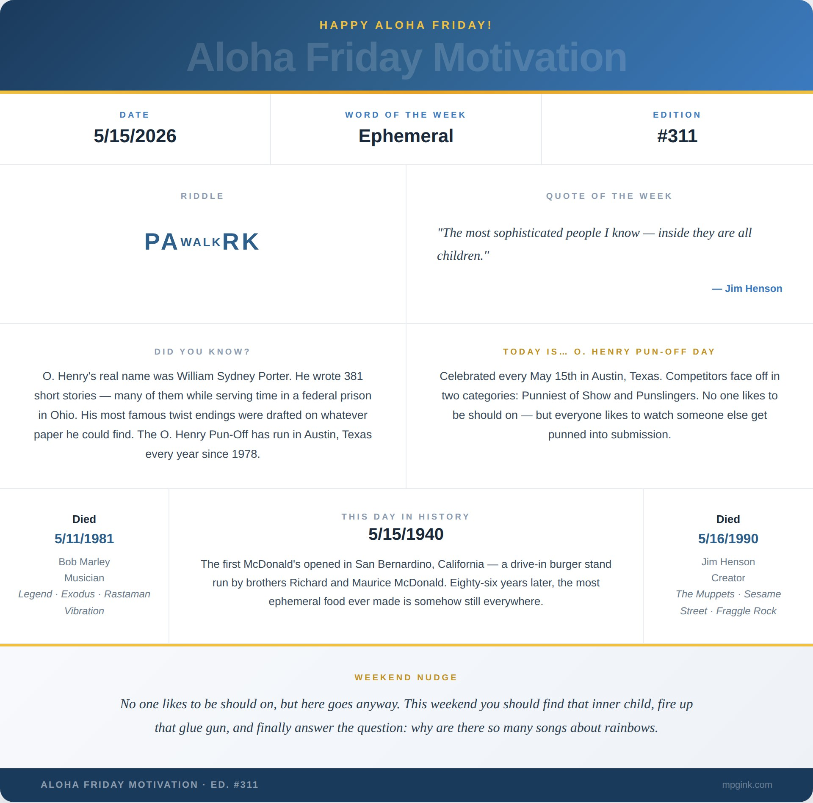

Happy Aloha Friday. 🌺
My son asked me to build him a blimp — and his expectations were sky-high.
Not a drawing. Not a pillow. A blimp. Out of cardboard. Functional in the sense that it had to look functional. Windows. Gondola. Proportions. Something he could hold in both hands and believe in completely.
He is six. His standards hover. No one told him they should be lower. I didn't have the heart to burst his bubble. Or his blimp.
So I pulled out the box cutter — because sometimes you really do have to think inside the box — and got to work. This wasn't going to be a walk in the park — more like a stroll across corrugated terrain.
This is not a new arrangement in our house. We've built water towers, windmills, robot costumes. My youngest wore a Roomba for Halloween — because of course he did — the same kid who recently handed me a picture of an iRobot Braava Jet and said, by name, that he needed one. In cardboard. While I was already mid-blimp.
I did not ask questions. You don't argue with a four-year-old who knows the exact model number of a robot mop. That's not a carpet I'm willing to die on. Or vacuum on.
The blimp was the biggest build yet. Nearly three feet long. I started with a small-scale model — you always build the model first — then scaled up. Layers of corrugated strips, curved and laminated. A gondola with actual windows. A tail fin with the Amazon Prime logo because that's where the cardboard came from, and because I work there, and because I am apparently a Prime delivery system for whatever my kids need built at 11pm on a Tuesday.
Here is what I have learned about building things with a child watching: they will roast your work until the moment it becomes recognizable. At the onset — just strips and geometry and a vague intention — they will tell you it looks wrong. It doesn't look like a blimp. They wander off. They come back, squint at it, and suddenly want to help cut strips. They ask if it's done yet approximately every four minutes. They are the quality control department. And business is brutal. Even tougher when the blimp is all bones and no skin.
And then the shape emerges. You can feel the moment it becomes the thing. Their eyes do something I don't have a word for. Worth every strip of cardboard.
There's a funny thing about building something out of cardboard: you start to realize it's less about how long it lasts and more about what it lifts. The whole project becomes a study in temporary architecture — flimsy on purpose, sturdy in spirit. And once you reach that altitude of thinking, you can't help drifting toward the legends who turned scraps, rhythms, felt, foam, and whatever was handy into something that floated far beyond its materials.
Bob Marley died four days ago, May 11, 1981. He was 36. He made music out of the most available materials imaginable — rhythm, repetition, a message so elemental it could have been dismissed, and wasn't. The man had a natural mystic about him.
Jim Henson dies tomorrow, May 16, 1990. He built Kermit out of a ping pong ball and his mother's old coat. Entire worlds from things that weren't supposed to last — foam, felt, wire, whatever was handy. The whole thing was felt. He once said: "The most sophisticated people I know — inside they are all children."
I think about that every time I pick up the box cutter. It's not easy being green — but it felt right.
Here is the thing about cardboard: it is not a permanent medium. The blimp will not last a good year. None of it lasts. That is not a problem to solve. That is the whole point. The making is the memory. The look on his face when the hull rounds into shape and suddenly — unmistakably — it is a blimp. That doesn't live in the object. It lives in him. It lives in me.
Marley made music that outlasted him by decades. Henson stitched together characters out of scraps and gave them souls somehow more real than most people I've met. My kid asked me for a blimp and I made him a blimp.
Make the thing. Even if it's flimsy. Even if it's cardboard. Even if the idea feels paper-thin. Especially then.
This week's sign-off: Amber — 311. Edition #311. Seemed only right.
Weekend Nudge: No one likes to be should on, but here goes anyway. This weekend you should find that inner child, fire up that glue gun, and finally answer the question: why are there so many songs about rainbows.
Mahalo Nui. 🌺
— Matthew
